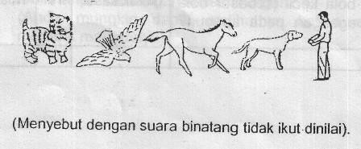
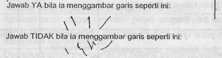

Kuesioner Praskrining untuk Anak 36 bulan
- Bila diberi pensil, apakah anak mencoret-coret kertas tanpa bantuan/petunjuk?
- Dapatkah anak meletakkan 4 buah kubus satu persatu di atas kubus yang lain tanpa menjatuhkan kubus itu? Kubus yang digunakan ukuran 2.5 – 5 cm.
- Dapatkah anak menggunakan 2 kata pada saat berbicara seperti “minta minum”; “mau tidur”? “Terimakasih” dan “Dadag” tidak ikut dinilai.
- Apakah anak dapat menyebut 2 diantara gambar-gambar ini tanpa bantuan?

- Dapatkah anak melempar bola lurus ke arah perut atau dada anda dari jarak 1,5 meter?
- Ikuti perintah ini dengan seksama. Jangan memberi isyarat dengan telunjuk atau mata pada saat memberikan perintah berikut ini: “Letakkan kertas ini di lantai”. “Letakkan kertas ini di kursi”. “Berikan kertas ini kepada ibu”. Dapatkah anak melaksanakan ketiga perintah tadi?
- Buat garis lurus ke bawah sepanjang sekurangkurangnya 2.5 cm. Suruh anak menggambar garis lain di samping garis tsb.

- Letakkan selembar kertas seukuran buku di lantai. Apakah anak dapat melompati bagian lebar kertas dengan mengangkat kedua kakinya secara bersamaan tanpa didahului lari?
- Dapatkah anak mengenakan sepatunya sendiri?
- Dapatkah anak mengayuh sepeda roda tiga sejauh sedikitnya 3 meter?